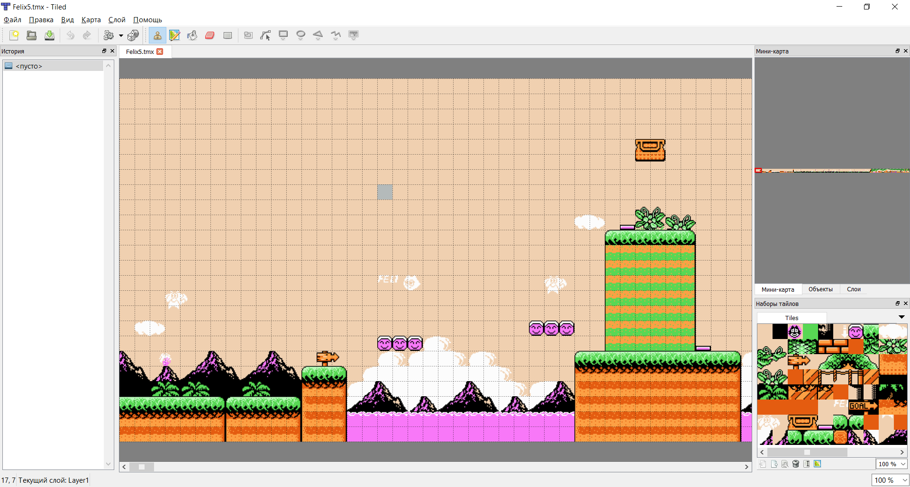
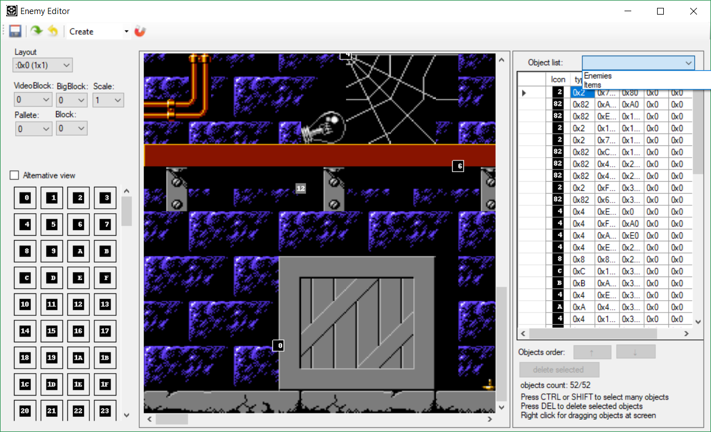
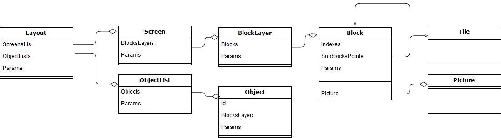
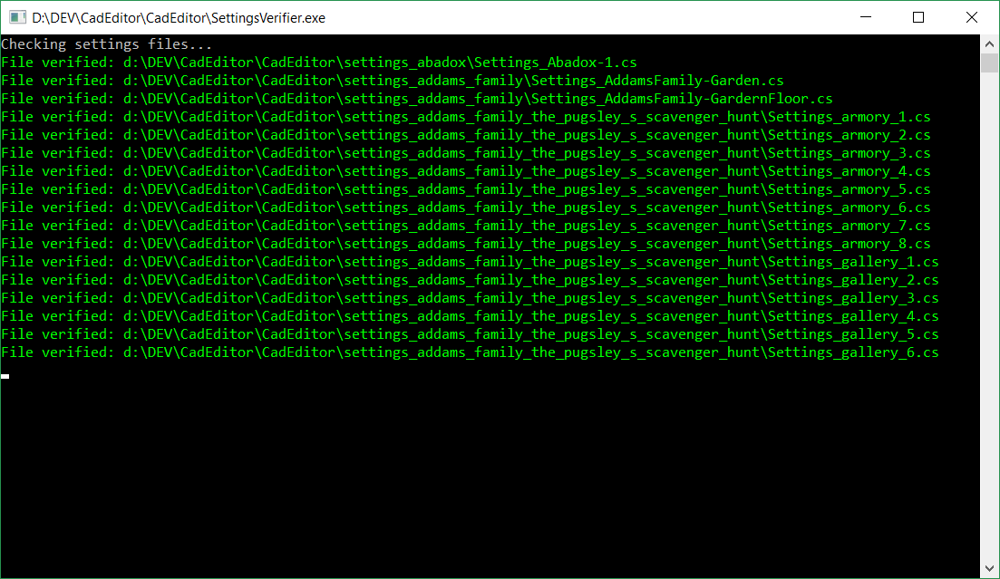
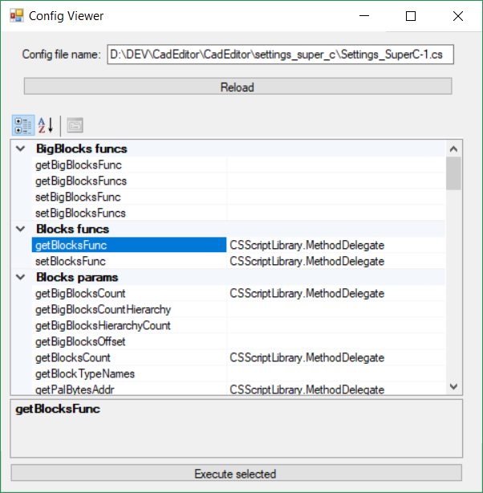

Привет всем читающим.
В этой статье я попробую изложить основные принципы и идеи реализации универсального блочного редактора уровней, который можно будет использовать с разными играми, внутренний формат хранения данных в которых не известен заранее. Данные принципы частично реализованы в редакторе уровней CadEditor, в котором в данный момент можно редактировать уровни из около 100 различных игр на NES и Sega Mega Drive (а также возможно подключение других игр без изменения кода редактора).
Но надо учитывать, что редактор изначально создавался для игры Chip and Dale (CaD Editor), и момент создания я знал только о формате уровней этой игры, и лишь потом поверх этого в него постепенно добавлялись фичи, позволяющие описывать уровни в других играх, поэтому код местами наполнен костылями, от которых надо избавиться, выкинув устаревшие части и заменив их более общими идеями.
Принципы работы простых блочных редакторов
В самом простом случае блочный редактор представляет собой всего пару окон - в одном из которых пользователь выбирает активный блок, а в другом - рисует выбранным блоком по карте уровня.
Часто помимо самой рисования блоков на карте пользователю даётся возможность расставлять в по ней объекты и сохранять список этих объектов и их свойств в отдельный файл, либо же вместе с массивом индексов блоков (в этом случае уже необходимо какое-либо формальное описание формата файла с картой). Также в формат уровня обычно входят какие-либо параметры карты, вроде используемного набора блоков в этой карте, а также её размеры и структура входов и выходов из карты. Почти все редакторы работают с каким-либо конкретным форматом карты, в лучшем случае позволяют экспортировать/импортировать карты в несколько различных форматов. Например, редактор Tiled позволяет сохранять карту в формат tmx, для которого есть загрузчики для различных игровых движков, а также экспортировать её в формат для других редакторов карт. 
Однако разные игры могут очень сильно отличаться по форматам данных, которые используются для внутреннего хранения информации об уровнях. Если разработчик создаёт собственную игру, он может использовать тот формат, в котором сохраняет карты имеющийся редактор уровней.
Но как поступить в обратной ситуации, когда игра уже создана и формат уровней в ней известен, а редактора уровней для неё в открытом доступе нет?
Существует три пути решения этой проблемы:
- Можно написать редактор уровней с нуля для конкретной игры.
Плюс этого подхода - редактор гарантировано будет учитывать все особенности конкретной игры и подстроен под её ограничения. Минусы - каждый раз с нуля писать редакторы долго и непродуктивно, существуют сотни старых игр с множеством фанатов, делать редактор для каждой отдельно долго и сложно. Кроме того, будет очень сложно поддерживать все эти редакторы. Например, если возникнет желание добавить возможность отмены последнего действия пользователя, придётся вносить её в каждый редактор. Необходимо использовать какой-либо "каркас" с общими для всех редакторов функциями - отображение координатной сетки, очистка всей карты, контекстной меню, оптимизация рендеринга больших карт, масштаб - и т.д. и т.п.
- Использование готового тайлового редактора и создание уровня в нём, а затем конвертация уровня в свой формат.
Этот подход лишён минусов предыдущего - готовая программа скорее всего обладает всем необходимым функционалом по редактированию, и после создания уровня остаётся только задача по конвертации готовой карты в свой формат. Однако, если вы попробуете сделать подобное на практике, то скорее всего столкнётесь с двумя проблемами, вытекающими из того, что все готовые редакторы уровней работают с картой своего формата, и не позволяют описывать какие-либо дополнительные ОГРАНИЧЕНИЯ, а также как-либо существенно менять этот формат. Первая проблема - отличия между форматом карт редактора и нужной вам игры могут быть несколько велики, что конвертер будет очень сложным. Вторая проблема - если созданный в редакторе уровень оказалось невозможно конвертировать в уровень для игры - очень сложно внятно объяснить пользователю, почему его прекрасный уровень не годится и его надо упростить и как именно ему это нужно сделать. Простейший пример - игра может использовать для хранения индексов блоков 1 байт, и это означает, что пользователь должен ограничить себя 256 блоками, более сложные могут включать в себя сложные условые на порядок расположения объектов для игрового движка, количество используемых цветов и итоговый размер файла карты после конвертации.
- Создание универсального редактора, который позволит гибко задать ограничения для любой игры.
Минусы данного подхода - в общем виде данная задача очень сложная (нужно предусмотреть все возможные варианты того, что приходило в голову разработчикам игр всех времён), любая неучтённая мелочь может обернуться невозможность использовать редактор с какой-либо игрой, или использовать лишь частично. Плюсы - если ограничить себя отдельной категорией игр, то можно достичь хороших результатов, причём неучтённые особенности можно добавлять по мере развития и поддержки такого супер-редактора.
В категорию игр, которую я выбрал для редактора CadEditor, попадают почти все игры для старых консолей - NES, SNES, Game Boy, Game Boy Advance, Sega Mega Drive, скорее всего другие платформы с тайловой графикой.
Общие идеи, встречающиеся в большинстве игр с блочными картами
Большинство форматов игр я исследовал с помощью реверс-инжиниринга игр для NES (и немного для SMD и GBA), для других игр я изучал документацию, сделанную другими исследователями и читал код их редакторов уровней. Я думаю, что перебрал форматы игр около 150 игр, на основании которых составил заметки о том, как создать такие строительные элементы, с помощью которых можно составить уровни к каждой из игр.
Сначала я опишу эти базовые строительные элементы, "кирпичики", из которых можно построить уровень. Они выбраны так, чтобы с помощью них можно было описать максимально широкий диапазон уровней, поэтому для простых игр они могут показаться избыточными, однако только с помощью всех них вместе можно описать любую (теоретически) игру и добавить её в редактор.
После описания этих элементов, я покажу, какие способы описания взаимоотношений элементов можно дать пользователю (описывать их комбинации и настройки, задавать ограничения и разрешения на добавления новых элементов динамически, а также указывать допустимые способы сохранения/загрузки в файлы).
В следующих статьях будет подробно разобрана структура нескольких игр, и будет описано, как с помощью строительных элементов передать эту структуру для редактора CadEditor.
Layout

редактор списка объектов в раскладке
Самым общим понятием редактора уровня является "раскладка" уровня (Layout). Этот элемент описывает, каким образом соединяются вместе "экраны" (ScreensList), а также описывает свойства уровня (Params) и списки объектов (OjbectsList) на нём.
ScreensList
Список экранов, элементы которого - "экраны" (Screen). В общем случае в раскладке указывается, как именно соединяются экраны вместе. В 99% случаев это матрица, в которую вписаны номера экранов, а также указаны произвольные свойства для этих экранов (уникальные для каждой игры, сюда может входить информация о направлении движения, спецэффектах, активирующих на данных экране, расположенных на них выходах с уровня и телепортах и т.п.).
Однако, кроме матрицы из экранов одинакового размера это может быть также список, в котором хранятся координаты левого верхнего угла экранов, при этом экраны могут быть разного размера в пределах одной раскладки. Матрица экранов - это просто частный случай такого списка, в котором все экраны одного размера и находятся на одинаковом расстоянии друг от друга. Свойства экрана могут быть привязаны как конкретному экрану, так и к элементу списка, в котором он хранится (тогда, например, два одинаковых экрана могут иметь разные свойства, хотя и быть визуально идентичными). В простейшем случае список экранов хранит лишь один глобальный экран, который предствяет из себя целый уровень, в других случаях экран - это какая-либо часть уровня.
Params
Обобщённый список свойств уровня, сюда может входить любая информация, в зависимости от игры (название уровня, его размер, допустимое количество объектов, используемые мелодии и звуки, стартовая точка, чекпоинты и т.п.). Свойства данного списка могут быть как простыми (числа, строки, другие списки), так и сложными. В этом случае для их редактирования могут подключаться плагины-редакторы свойств. Примеры таких свойств: редактор траектории камеры на всём уровне (Adventure Island 1), редактор препятствий на трассе (Battletoads), изометрический редактор высоты уровня (Final Fantasy Tactics Advance) и другие.
ObjectsList
Массив из одного или нескольких списков объектов расставленных на уровне. В самом общем случае объект в списке может иметь некоторый идентификатор, и координаты на уровне (номер или координату в списке экранов и позицию на экране), а также список из произвольных свойств объекта. Сам объект может представлять собой любой элемент уровня, отображается или невидимый на экране - стартовую позицию игрока, врага, приз, выход из уровня или триггер, меняющий музыку или палитру экрана). Главное отличие списка объектов от списка свойств уровня - он имеет отношение к какому-либо игровому экрану, а не относится ко всему уровню в целом. Списки объектов могут содержать однородные или разнородные объекты (например, в одном списке могут хранится как враги, так и игровые события, срабатывающие при определённых условиях).
Screen
 редактор слоя тайлов на экране
редактор слоя тайлов на экране
Логическая единица, представляющая собой прямоугольную часть уровня, которая соединяет несколько "слоёв" блоков (BlocksLayer). Стоит отметить, что никаких ограничений на размер нет, экраны могут быть огромных размеров в тысячи блоков, так и состоять из 1 блока в ширину и высоту, логический смысл данного строительного элемента лишь в том, что он может объединять несколько слоёв один поверх другого. В тривиальном случае экран содержит один слой.
Другое замечание - экран пока что описывается только как прямоугольник, отсутствует возможность задавать изометрические или гексагональные экраны и слои, ввиду того, что для приставок с тайловой графикой, родным строительным элементом для старых консолей является тайл, который может быть выведен только в виде прямоугольника на экране. Если логически в игре используется изометрическая сетка, то её элементами будут не тайлы, и её можно описать и отредактировать подредактором в Params в Layout уровня.
Params
Также для экрана, как и для Layout, и для всех остальных строительных элементов, можно описать массив произвольных свойств Params, в который будут читаться и сохраняться свойства экрана для конкретной игры, если это необходимо. Разные игры могут хранить свойства на разных логических уровнях (например, номер мелодии или погодного эффекта может сохраняться для всего уровня, или для конкретного экрана), и редактор должен позволять описывать эти свойства так, как это необходимо для конкретной игры. Для последующих логических блоков я буду просто указывать наличие данного свойства.
BlockLayer
Слой из блоков (Block). Слой представляет собой массив из блоков (Block) одного типа. Может быть смещён относительно начала экрана, если это необходимо. Также содержит описание формы заполнения слоя блоками (например, сверху-вниз или слева-направо).
Block
 редактор блоков
редактор блоков
Состоит из матрицы Indexes, элементами которой являются индексы блоков (Block) или тайлов (Tile), а также произвольные свойства (Params). Блоки могут состоять из других блоков, таким образом могут быть описаны иерархические структуры. Например, часто встречается структура экрана, при которой он описывается слоем макроблоков размером 2x2, каждый из которых сам состоит из 2x2 блоков, каждый из которых состоит из 2x2 тайлов. Это позволяет описывать экран очень компактно.
Вместо массива индексов существует возможность указать предзаготовленную картинку (BlockPicture), которая будет использоваться для отображения блока. Эта возможность полезна, если неизвестен формат, из которого построен блок. Если блок состоит из более мелких блоков, то он также содержит указатель на массив более мелких блоков, из которых будет строиться блок (SubblocksPointer).
SubblocksPointer
Указатель на массив более мелких блоков, из которых состоит блок. Используется в случае, если блок состоит не из тайлов, а из более мелких блоков.
Indexes
Массив индексов блоков или тайлов, из которых состоит блок.
Pictures
Изображение блока. Задаётся вместо массива индексов, если по каким-либо причинам пользователь не имеет возможности описать, из каких более мелких единиц состоит блок.
Params
Часто блоки содержат параметры, определяющие физические свойства блока (его проходимость в игре), описание палитры.
Brush
Иногда требуется ограничить возможность пользователя рисовать отдельными блоками, и разрешить ему использовать только определённые группы блоков вместе. В этом случае можно описать "Кисти" (Brush), состоящие из наборов блоков, которые можно устанавливать на карте только вместе, или с соблюдением дополнительных ограничений, и задать дополнительные параметры кистей. Возможность пока не реализована в редакторе.
Tiles
 просмотрщик построенных тайлов
просмотрщик построенных тайлов
Самая мелкая единица построения уровня. Тайлы - это картинки (загруженная или построеннык каким-либо способом), из которых строятся блоки.
Взаимоотношение элементов формата уровня
В итоге получается примерно такая схема отношений элементов: 
Задание описания формата уровней для подключения новой игры к редактору
Для того, чтобы подключить к универсальному редактору новую игру, необходимо:
- Описать взаимоотношения между элементами для конкретной игры - указать, параметры раскладки, из каких экранов она состоит и какие в ней есть списки объектов, далее описать сколько и какие слои есть на экранах, описать из каких блоков состоит слои, из как строятся блоки и тайлы (из более мелких блоков, картинок или тайлов), так же описать, какие свойства блоков присутствуют в данной игре.
- Описать, как все элементы (раскладки, списки объектов, экраны, слои, блоки и тайлы) будут загружаться и сохраняться - из ROM-файла, из отдельных файлов (дампов памяти и архивов), из заготовленных картинок или иным способом. Сюда же входит описание компрессии данных при загрузке/сохранении, если это необходимо.
- Возможно, написать и подключить в конфиге дополнительные плагины-редакторы, которые позволят редактировать специфические для игры параметры уровней, не описываемые схемой блочного редактора.
В простых редакторах описание взаимоотношений между элементами и способы загрузки/сохранения данных жёстко вшиты в код редактора, а указания адресов загрузки могут использоваться файлы настроек, являющиеся простыми текстовыми (например, формата ini или xml) файлами. Для универсального редактора необходимо иметь возможность задавать произвольный код загрузки/сохранения элементов, а также описания их взаимоотношений с помошью языка программирования (возможно, с элементами DSL), потому что не существует универсального формата, в которой можно было бы сохранить карту произвольной игры.
В CadEditor для описания конфигурационных файлов используются библиотека CSScript, которая позволяет динамически загружать и выполнять скрипты на языке C#. Сам редактор предоставляет библиотеку стандартных функций сохранения/загрузки. Во время загрузки конфигурационного файла редактор ищет в нём функции с заранее определёнными именами, и если они присутствуют, то вызывает их, чтобы построить схему формата уровня конкретной игры, и загрузить данные, позволяющие приступить к редактированию игры. Некоторые функции в конфигурационном файле можно пропустить - в этом случае редактор будет использовать "стандартные" версии функций из своей библиотеки (стандартными выбраны функции, используемые для загрузки уровня из движка Capcom для NES, которые используются для игр Chip & Dale Rescue Rangers, Darkwing Duck, Little Mermaid, Tale Spin, Mega Man 3-6 и некоторых других).
В следующих статьях будет описан разбор формата уровней нескольких игр и приведены примеры того, как редактор загружает конфиги, созданные для этих игр.
Потенциально, возможно создание специальной программы для разработки конфигов новых игр для редактора, с возможностью выбора готовых функций сохранения/загрузки данных и одного из готовых уже описанных форматов уровней (т.к. описаны конфиги примерно 100 игр, скорее всего, найдётся игра, в которой формат уровней будет похож на уже описанные игры), а также написание кода для загрузки данных новыми способами.
Однако сейчас конфиги могут быть составлены только в обычном текстовом редакторе с подсветкой синтаксиса языка C#. Для проверки конфига на наличие синтаксических ошибок и присутствия в нём всех необходимых функций, можно просто загрузить его в редактор CadEditor и в случае ошибки в коде конфига получить сообщение с описанием причины и строчки, в которой возникла ошибка (в случае успешной загрузки редактор покажет, как выглядит уровень игры после загрузки его по правилам, описанным в конфиге).
Для упрощения проверки всех конфигов в репозитории редактора CadEditor имеются 2 программы - SettingsVerifier и ConfigViewer.
SettingsVerifier при запуске автоматически загружает в CadEditor все найденные в текущей папке конфиги и выдаёт на консоль результат - были ли ошибки загрузки или же конфиги валидны. 
ConfigViewer позволяет загрузить конфиг и показывает все имена функций, которые ищет в нём редактор CadEditor, а также позволяет запустить каждую из этих функций конфига отдельно, и показывает результат её выполнения, либо сообщает о том, что при выполнении функции произошла ошибка и сообщает детали этой ошибки. 
Разбору формата уровней конкретных игр и способам составления конфигов для них будут посвящены следующие несколько статей.